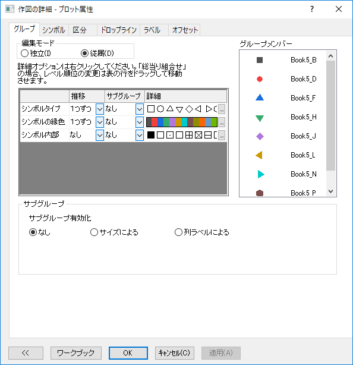
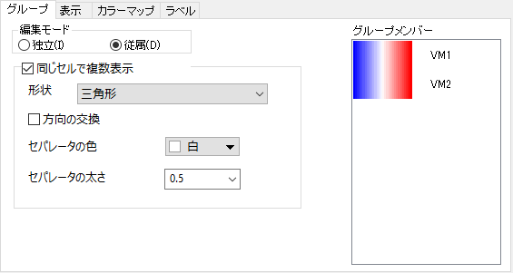

グラフのプロパティ(色、シンボルなど)がカテゴリー列にインデックス化されている場合、推移エディタ－や作図の詳細のタブリスト(図形リスト、内部リスト)にカテゴリーとの対応がわかりやすく表示されます。
グループ化されたプロットをダブルクリック、または 作図の詳細 ダイアログを開き、左のパネルでグループの先頭のデータセットのアイコンを選択し、て、グループ タブを開きます。
このタブ上で利用できるオプションは、グラフタイプや他のタブで選択されているオプションによりさまざま変化します。これらを使って、グループ化されたプロットをどのような形式にするかを決定します。
|  |  |
| 通常のグループタブ | 分割タイルヒートマップのグループタブ |
|
Note: グループ化したデータプロットを編集する良い方法は、編集モードを従属にするか、プロット要素の推移動向を編集するかの何れかです。（次をご覧ください） |
これらのコントロールを使って、グループ化されたデータプロットの表示属性を編集したり、グループ推移リストを作成することができます。
推移 列のドロップダウンリストをクリックし、推移の仕方を設定します。
| なし |
推移せず、グループのすべてのメンバーに最初のプロット要素が適用されます。 |
|---|---|
| 1つずつ |
詳細列のリストを使って推移します。リストがグループ内のメンバーの数よりも少ない場合、プロット要素は、リストの最後までいくと最初に戻って繰り返し使用されます。 |
| 全体に合わす |
詳細列のリストを使って推移します。リストがグループ内のメンバーの数よりも多いか少ない場合、最初のメンバーは最初のリスト要素を使用し、最後のメンバーは最後のリスト要素を使用し、他のメンバーはその間を補間した要素を使用します。 |
| ビン化 |
詳細列のリストを使って推移します。リストがグループ内のメンバー数より短くない場合は、リスト内のメンバーをグループ内のメンバー数に応じてビン化し、対応するビン内の中心メンバーをグループ内の対応するメンバーに使用します。リストがグループ内のメンバー数より短い場合、ビン化も行われますが、リスト内の同じメンバーがグループ内の複数のメンバーに適用されることがあります。 |
| ブックロングネーム/ブック名/シート名 |
詳細列のリストは、ソースのブックロングネーム/ブック名/シート名のインデックスに従って推移するために使用されます。プロットは、同じワークブックまたは同じロングネームのワークブックから作成されるか、同じワークシートまたは同じ名前のワークシートが同じリスト要素にインデックスされます。 |
| ロングネーム/単位/コメント/サンプル間隔 |
詳細列のリストは、ソースのブックロングネーム/ブック名/シート名のインデックスに従って推移するために使用されます。プロットは、指定された列ラベル行の同じ値（カテゴリ値または数値）の列から作成され、同じリスト要素でインデックスされます。0、10進数の値、またはリスト内のプロパティの数より大きい値などの値を持つ列ラベル行がある場合、これらの値はプロパティリストにマップすることができないため、Originはその列ラベル行をカテゴリテキストとして扱います。 |
| Note: ユーザが保存した推移リストのテーマは同じようにテーマオーガナイザで編集できます。 |
グループ化プロットで推移リストを使用する方法を指定します。
| なし | 推移リスト適用時にサブグループを考慮しません。 |
|---|---|
| サブグループ内 | 各サブグループ内で推移リストを繰り返します。 |
| サブグループ間 | サブグループ間で推移リストを繰り返して、各サブグループのプロットが全体として取り扱われ、かつ、同じサブグループ内のデータプロットが同じスタイル設定を共有するようにします。 |
推移リストでメタデータ（ブックロングネーム/ブック名/シート名/ロングネーム/単位/コメント/サンプリング間隔）を選択した場合、サブグループドロップダウンリストは無効になります。
推移リストエディタまたは色の作成ダイアログで以下のことができます。
グラフのプロパティ(色、シンボルなど)がカテゴリー列にインデックス化されている場合、推移エディタ－や作図の詳細のタブリスト(図形リスト、内部リスト)にカテゴリーとの対応がわかりやすく表示されます。 |
1つ以上のプロット要素が1つずつ、全体に合わす、ビン化のいずれかにセットされている場合、推移は1対1組合せ方式または総当り組合せ方式のどちらかで適用できます。
グループメンバー プレビューは現在の設定の影響を表示します。
総当り組合せ方式で要素が推移するときは、要素の並べ替えと、どのように推移するか設定することが出来ます。
現在のグループ化されたプロットに対しては、サブグループ設定 でそれらのプロットをサブグループ化し、サブグループを推移リストに適用することが出来ます。
この表示ボックスには、グループ内のすべてのデータプロットの現在のプロットスタイルが表示されます。 グループタブまたは関連する作図の詳細ダイアログボックスのタブで設定を変更すると、このボックス内の表示が更新されます。
この設定は、特定のサブグループサイズ、列ラベル行のグループ化識別子、または軸によって、グループ化プロットをさらにサブグループに分割するために使用されます。
| サブグループ有効化 |
グループ化プロットのサブグループ化の方法を指定します。 オプションリスト：
|
|---|---|
| サブグループのサイズ |
サブグループ有効化の方法をサイズによるにした場合利用可能です。サブグループ内のデータプロットの数を選択するか入力します。 |
| 列ラベル |
サブグループ有効化の方法を列ラベルによるにした場合利用可能です。組み込みの列ラベル行と、アクティブワークシート上の列ラベル行のリストからサブグループ識別子として使用するラベル行を選択します。 |
| Note: 縦棒グラフまたは横棒グラフがグループ化されている場合、作図の詳細の積上げ形式 タブ で、サブグループの有効化（グループタブ） を設定 |
次の例では、同じアークシートデータでの3つのバリエーションを示します。列ラベルでのサブグループ化ー ロングネーム、 年 または 予算
この例では、ロングネーム列にグループ情報があり、同じグループのシンボルが同じサイズと色になるようにします。
このグループコントロールは、分割タイルヒートマップでのみ使用できます。このチェックボックスをオンにすると、ヒートマップのセルを複数のZ 値によって複数に分割できるようになります。
Note: 同じヒートマップセル内に表示される複数のZ値は、X・Yが同じ値の場合にのみ機能します。同じグループ内の同じセル内の同じx・yを持つプロットを表示します。一方、各変数のラベルは関連するポリゴンの中心にある必要があります。
ヒートマップセルを分割するピースの形状を指定します。
例えば、Zデータセットが4つある場合、ヒートマップセルは次のように分割されます。
_Group_Tab/HeatmapCellShape_03.png)
|
|||
| 三角形 | 水平方向に分割 | 垂直方向に分割 | 両方向に分割 |
分割したピースの並び方向を入れ替えるかどうかを指定します。
分割されたピースのデフォルトの配置方向は、時計回り (三角形) または左から右 (水平/垂直方向に分割) です。 方向の入れ替えを選択すると、方向が反時計回りまたは右から左になります。両方向に分割の場合、デフォルトの方向は行ごとです。方向を入れ替えると列ごとになります。
セルの区切り線の色と太さを指定できます。区切り線は、セルを分割する直線のことです。デフォルトの色は白で、デフォルトの幅は0.5です。